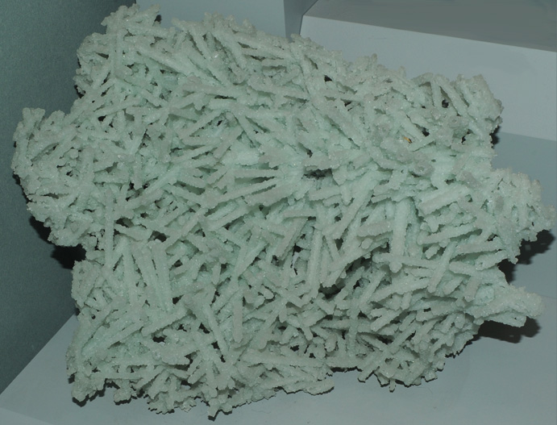

|

| CaAl2Si4O12.4H2O
This sample is prehnite formed after laumontite and is displayed in the Smithsonian Museum of Natural History. Laumontite is a silicate mineral with the composition CaAl2Si4O12.4H2O. This sample of prehnite is from Bombay, Maharashtra, India. It is about 20 cm wide and is described as prehnite after laumontite. An image of laumontite was not obtained, but laumontite is an alumino-silicate like prehnite, and it easy to envision laumontite being replaced by prehnite as conditions changed in the location.
|